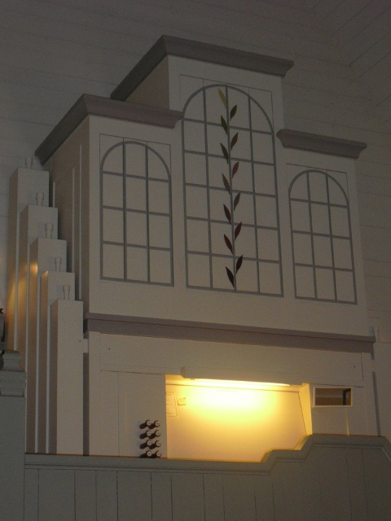

Bureå funeral chapel organ sampleset
This organ was built in 1990 by Johannes Menzel Orgelbyggeri AB for the funeral chapel in Bureå, Sweden.
The recording of the samples was done in December 2009 by Lars Palo with a M-Audio Microtrack II and the enclosed little stereo condenser microphone. The recording settings were stereo 16 bit and 44100 Hz samplerate.
The sampleset is created by Lars Palo with help and lots of advice from the members of www.jeuxdorgues.com forum. (Special thanks to Graham Goode for his kind and untiring advice giving. Without his help this would not have been possible!) Noise reduction of the samples was made with Nick Appletons Noise Reduce software (there's now a Linux version officially available from Nicks page as well!).
The original specification of the organ is:
| Manual (56 notes, C-g3) | Pedal (27 notes, C-d1) |
|---|---|
| Salicional 8' (B+D) | Subbas 16' |
| Gedakt 8' (B+D) | Man/P |
| Voix Celeste 8' (B+D) | |
| Rörflöjt 4' (B+D) | |
| Principal 2' (B+D) |
Beside the original specification there's an extended version included where Salicional 8' has its own pipes from C (036) to B (047) which were created from the octave above. Also the compass of the manual is increased to C-c4 (61 notes) and the pedal is increased to C-g1 (32 notes). A new pedalstop, Gedackt 8', was created from the Subbas 16' pipes to allow the pedal to be used more independantly. Two new manual stops, a Quinte 2 2/3 and Third 1 3/5 were created by taking advantage of the re-tuning feature of GrandOrgue. To make playing easier 10 general combinations were added as well as buttons for some built-in features like GC, Set, Forward & Backward in the free combination (sequencer) list.
 This sampleset is licensed under a
Creative Commons Attribution-ShareAlike 2.5 Sweden License.
This sampleset is licensed under a
Creative Commons Attribution-ShareAlike 2.5 Sweden License.
For english text visit Creative Commons Attribution-ShareAlike 2.5.
The original creator can be contacted on larspalo@yahoo.se
